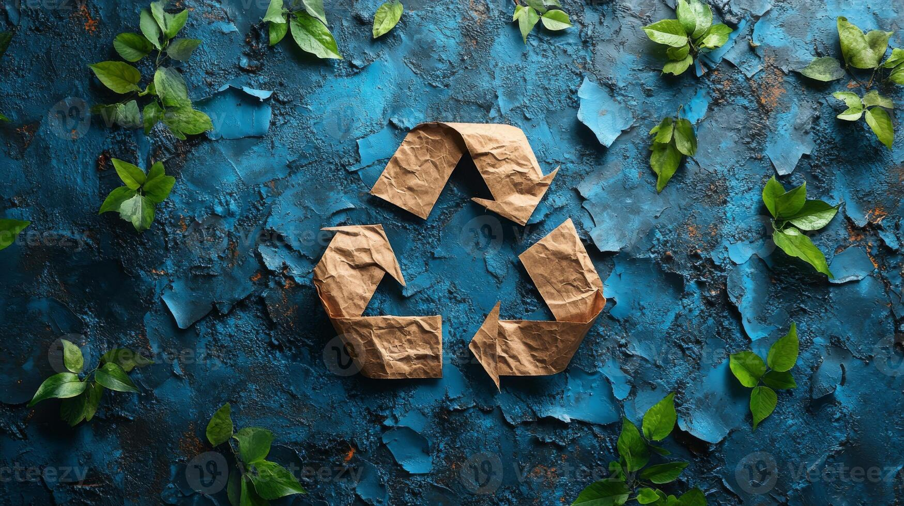

A Zero Waste alapelvei: 5R
- Refuse: Mondj nemet azokra a dolgokra, amelyekre nincs szükséged, mint például az ingyenes újságok vagy az egyszer használatos műanyag termékek.
- Reduce: Minimalizáld a fogyasztásodat, vásárolj csak olyan dolgokat, amelyekre valóban szükséged van, és amelyek hosszú távon is hasznosak lesznek.
- Reuse: Használj újra termékeket, javíts meg dolgokat ahelyett, hogy újat vásárolnál, és részesítsd előnyben a tartós, újra használható eszközöket.


- Recycle: Gyűjtsd szelektíven a hulladékot, hogy az újrahasznosítható anyagok ne kerüljenek a szeméttelepre.
- Rot: A biológiailag lebomló anyagokat, mint például a konyhai zöldség- és gyümölcshulladékot, komposztáld, hogy természetes úton visszakerüljenek a talajba.